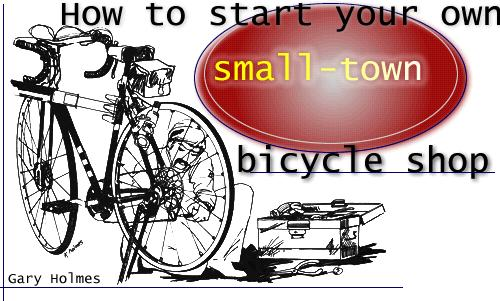

Here-for all the folks who want to get out of a big city and start a little business in a friendly, peaceful spot-is yet another small-town self-employment suggestion: Become a bicycle dealer in the small town of your choice. My wife, Sharon, and I have run a bike shop for a year now and feel sufficiently expert to pass on a few basics (enough, we hope, to help you decide whether or not this trade will suit you as well as it suits us).
First, why a bicycle shop? Because-as you probably know-a "bike boom" is underway. In 1972, two-wheelers outsold automobiles for the first time in modern history and someone has to market and service all those millions of machines. (Incidentally, one satisfaction of the business is the knowledge that you're providing your customers with non-polluting transportation.)
And why a small-town location? Partly, of course, to give you that relaxed, pleasant life you're after but also because the smaller community is a good potential market for well made bicycles, and one that's been neglected because of the direction the boom has taken.
Increased demand for bikes has brought more and more manufacturers into the field: some with fine products and some with junk designed to be sold cheaply to Americans who don't know what makes a good machine. These larger producers-with a few exceptions-seem to be concentrating on urban sales, with much of their output retailed through department stores and discount houses. So it happens that the resident of the average small town can buy a bicycle only through the local chain outlet and in most cases his acquisition will be of poor quality. Which adds up to a fine opportunity for you, the independent small-town dealer, to profit by offering-without competition, usually-better goods than those in the department stores. You won't have a monopoly on local bike sales, of course: Many people will buy the cheaper products from large outlets just to save money. But when their purchases fall apart (as they inevitably do), you'll get the repair jobs.
The amount of money you'll need to start a bike business depends on the scale of your plans. Ten thousand dollars will launch a very large operation, $5,000 an adequate one. Sharon and I began on $3,500 and could probably have got by with a little less.
Whatever your initial grubstake, it's best if you don't have to borrow the money to start with. Today's interest rates could easily make the difference between success and failure.
Before you rush out to open a shop in some village with a population of 49, let me say that by "small town" I mean a community of at least 10,000. Independence, Kansas-our own location-has about 12,000 people and provides enough volume to support our business but I wouldn't want to try it anyplace much smaller.
Although almost any building will do (at least to start with), it's best to find one that can be divided easily into a small showroom and a service area. When to start looking for that ideal place is a tricky question: You don't need a store until you have goods to sell but you don't want to fill your house with bicycle cartons while you hunt for a shop, either. Sharon and I initially chose to live with the boxes and I used our living room as an assembly area. After three or four days of tripping over bike parts, however, we found a location for our soon-to-be business and moved frames, wheels, pedals and all over there. A bit of hindsight: If you aren't native to the town in which you open your shop, it's easy to choose a poor spot. Our first building (which was small and rented for just $60.00 a month) was only two blocks from the main intersection of Independence, and-since that's a short distance by city standards-we assumed we were "downtown". To the local people, however, our place was on the outskirts of the community and we had very little walk-in business for a few months (until we moved to a roomier, better-located shop that costs us a monthly $125). What you want is a small building in the very center of town. An old gas station (easy enough to find these days) on a good site would be perfect.
Before your Grand Opening, you will-of course-have to line up wholesale suppliers to furnish you with bicycles, parts and accessories. This, too, calls for careful timing: During the summer months you may have trouble finding sources whose merchandise hasn't been sold out to existing dealers.
For this reason, I think it's best to open a new bicycle shop in the fall when the height of the season is over and most distributors will welcome new business. That way you'll also have time to become familiar with the operation before spring rolls around, and the local people will have some months to get used to the presence of your store.
The easiest way to find suppliers is by going to your local telephone company office (which probably has, or can get, phone books for every major city) and thumbing through all the Yellow Pages. Start with centers of commerce close to you, because the nearer your wholesale source, the less you'll have to spend for freight charges.
We've dealt with several supply houses and have found that they range in quality from excellent to terrible. The following are the best we've traded with:
Gitane Pacific
4925 West 147th Street
Hawthorne, California 90250
Alpine Distributors
328 Link Lane
Fort Collins, Colorado 80521
Beacon Cycle Supply
1801 East Bolivar Avenue
Milwaukee, Wisconsin 53207
D-I-N Industries, Inc.
2224 Old Middlefield Way
Mountain View, California 94040
Right! You've tracked down a building and contacted your suppliers. Now, how do you spread your money around so you'll have the best chance of making that new bicycle shop a going concern?
Let's say you begin with a total of $4,000. From that amount you should set aside $500 to cover your non-merchandise overhead for the first couple of months. (After that length of time the shop ought to be generating sufficient income to pay these expenses as they arise.)
Next, reserve another $200 for initial advertising. This isn't much, but it goes a long way in a small town where rates are generally low. We spent about that amount-mostly on modest sized, straightforward newspaper ads surrounded by heavy borders-just to let everyone know we were open for business. Now that we're established, we find that the same simple, direct advertising approach still works best for us.
With the remaining $3,300 of your original investment you'll buy everything else you need, including $1,500-$2,000 worth of bicycles. This should get you 17 to 21 medium priced 10-speed machines which will retail for about $125 each. The average markup on bicycles is 30-35%, not a lot compared to that on other types of goods. Fortunately, you'll do considerably better on parts, accessories and service. Other dealers have told us that new bike sales pay their expenses while all their profit is derived from other areas. Not so with us we place a priority on selling new machines and let the sidelines develop in proportion.
Your initial supply of bicycles should allow the customer a choice of at least two brands. Your suppliers can help you decide on the best colors and frame sizes to start with. As long as you're dealing with reputable firms, you shouldn't have to worry about being oversold on any style. The wholesalers may, however, try to sell you their more expensive bikes (which retail at $200-$500 each). In the beginning it's best not to tie up your limited capital in such items but do get brochures on the distributors' entire lines in case someone wants a higher-priced model than you have in stock.
You now have $1,300-$1,800 left to invest about $400 of which you should put into parts and accessories. That's not a lot, but it will buy most of the items your customers are likely to want at this point. Since the usual markup on such merchandise is 100%, this expenditure can bring you a return of $800. In our shop, however, we think it helps business if we hold our percentage down a little. (You'll find this wise, particularly if other stores around you sell cyclists' supplies.)
Space doesn't permit a list of the specific parts you'll need but here's a good working principle: Especially at the beginning, don't try to stock every component for every machine made it can't be done. Concentrate instead on replacement items and accessories for the bikes you handle and maybe other popular brand sold in town. They'll probably fit other lines also, since many parts are interchangeable among good 10-speeders. Remember, if you don't stock a certain article you can always order it when you need it. That's better than having odds and ends gathering dust on your shelves.
If possible, assemble a couple of bicycles before you order parts so you'll be familiar with the various bits and pieces. Then-if you still have trouble selecting from the wholesale catalogs-talk to at least two of your suppliers. They should be able to give you plenty of help (and may even go so far as to make up lists of suggested merchandise for you). After a while you'll learn what to order and what not to, and your inventory will grow until you can give your customers just about anything they need. And don't neglect the parts-and-accessories end of the business: Such sales will make up a large part of your income.
Obviously, you'll need tools to put bicycles together and keep them that way but there's no need, in the beginning, to spend more than $100 on this equipment. First, get a set of metric wrenches, some adjustable wrenches and a few screwdrivers. You'll be amazed at the repairs you can do with these few items alone. You'll also need some tire repair tools, plus a few gadgets made especially for bike work. The rear gear cluster (or freewheel) on a 10-speed model, for instance, can be removed only with a special piece of equipment and different variations of the tool are necessary for various brands of the cluster. Again, your supplier can tell you what to order. The more expensive articles such as movable repair stands and air compressors can come later, as your business grows.
When you're just getting into the trade, putting bicycles together can teach you almost everything you need to know except the best way to go about it. At the outset, just to assemble a modern 10speed machine may seem an impossible task. The first one I tackled took me the best part of two days before it was fully adjusted and ready to go. Now I can do the same job in about 15 minutes.
The best solution to assembly and repair problems is to get a good book on bikes and read it as you go along. My own favorite and the manual I learned from-is Derailleur 5, 10 and 15 Speed Bicycle Repair ($3.95 from XYZYX Information Corporation, 21116 Van Owen, Canoga Park, California 91303). Some distributors hold regular "repair schools" and if you can get in on one of these, so much the better.
Since a good portion of your income will come from bicycle service, you'll need to know how to charge for the jobs you do and that's where some outside help comes in handy.
You'll find it well worth $25.00 a year to belong to the National Bicycle Dealers Association (29025 Euclid Avenue, Wickliffe, Ohio 44092). Among other advantages, your membership will bring you a service rate book that tells how long a specific repair or adjustment should take and how much you should ask for the work in your area. The Association will also send you a listing of bicycle and parts suppliers all over the United States. By all means, join . you'll save yourself hours of frustration.
What's left of your original $4,000 should be held in reserve just in case you need it. If a customer walks in and wants five or six bikes for his grandchildren, for instance, and you don't have them in stock at least you'll be able to order the machines.
While most businesses are new and growing it's usually best to plow every penny of profit back into the operation and a bike shop is no exception. In fact, it's a good idea not to try to depend on your fledgling enterprise for a living until it's firmly established.
How much can you expect to make from a small-town bike shop? It's hard to say. We've always felt that a good part of our income isn't measured in dollars, but in the satisfaction of meeting the good people who ride bicycles. That much we can promise you: The rest depends on how hard you work at learning and operating the business. Unless you open a large establishment in a big city, you can't expect to get rich but if you're satisfied to work hard at your trade in quiet, peaceful surroundings, good things will come your way.
Copyright © 2001-2002, Ogden Publications, Inc.
All rights reserved.
|
 |
|
|